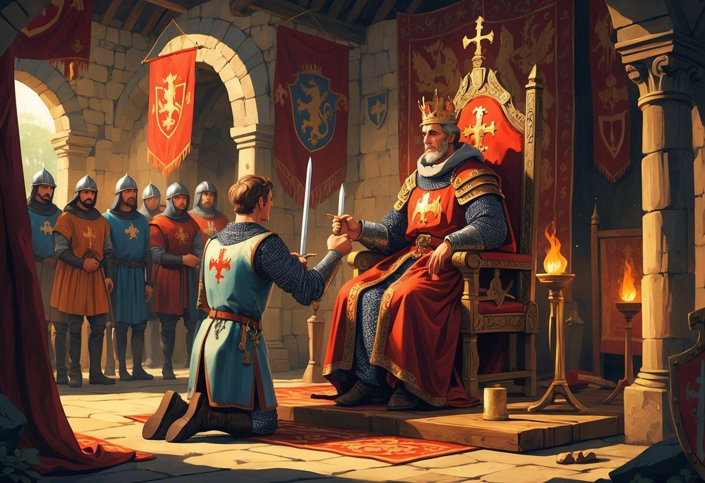

Tu arrives au village et retrouves le marchand dans une auberge. Lorsque tu mentionnes le parchemin volé, il tente immédiatement de s'enfuir. Tu parviens à lui barrer la route.
Terrifié, il avoue avoir transporté un coffre jusqu'à une forteresse abandonnée, sur ordre d'un ancien chevalier. Il te propose de t'y conduire en échange de sa liberté.
Que décides-tu ?